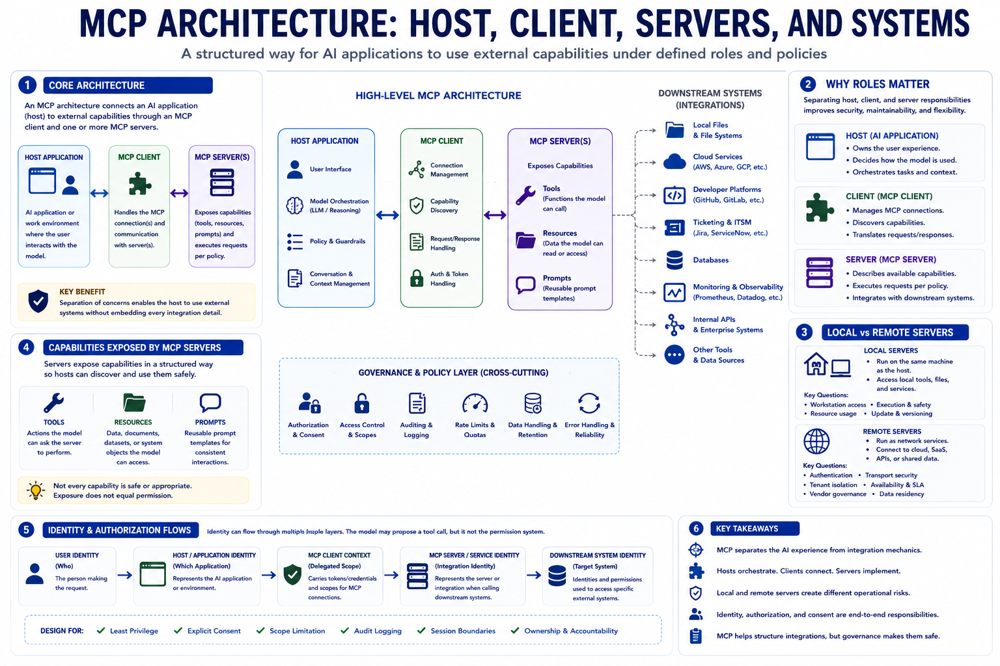

MCP Architecture at a High Level
Connecting to LMS... Progress: in progress

Narration
An MCP architecture usually starts with a host application. The host is the AI application or work environment where the user interacts with the model. Inside or alongside the host, an MCP client communicates with one or more MCP servers. The server exposes capabilities such as tools, resources, or prompts. Those capabilities may connect to downstream systems such as local files, cloud services, developer platforms, ticketing systems, databases, monitoring tools, or internal APIs.
The host, client, and server roles matter because they separate responsibilities. The host decides how the user experience works and how model interaction is orchestrated. The client handles the MCP connection to a server. The server describes available capabilities and carries out requests according to its implementation and policy. This separation helps an AI application use external systems without embedding every integration detail directly into the host.
MCP servers can be local or remote. A local server may run on the same machine as the host and expose local tools or files. A remote server may run as a network service and connect to a cloud platform, SaaS product, enterprise API, or shared data source. Local and remote models create different operational concerns. Local servers may raise workstation access and execution questions. Remote servers may raise authentication, transport, tenant isolation, availability, and vendor governance questions.
Identity flows through this architecture in several ways. A user identity may represent the person making the request. An application identity may represent the host. A service identity may represent the server or downstream integration. The model may propose a tool call, but it should not become the permission system. MCP helps separate AI application behavior from external system integration, but teams still need to design authorization, consent, logging, and ownership around the full path.